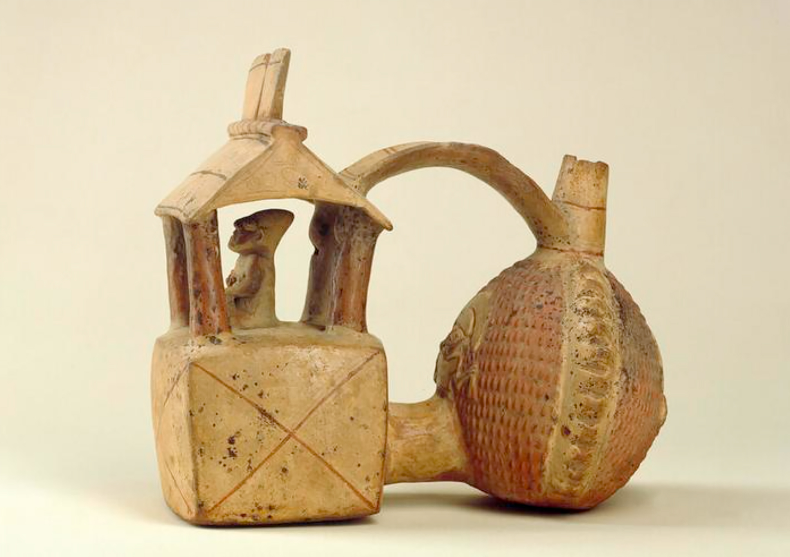

Récipient en forme de temple
Auteur: inconnu
Date: période Chimu (1000-1440)
Dimensions: 19,2 x 21,6 cm
Matériaux: terre cuite
Lieu de conservation: Ethnologisches Museum, Berlin
© BPK, Berlin, Dist. GrandPalaisRmn/Dietmar Katz
